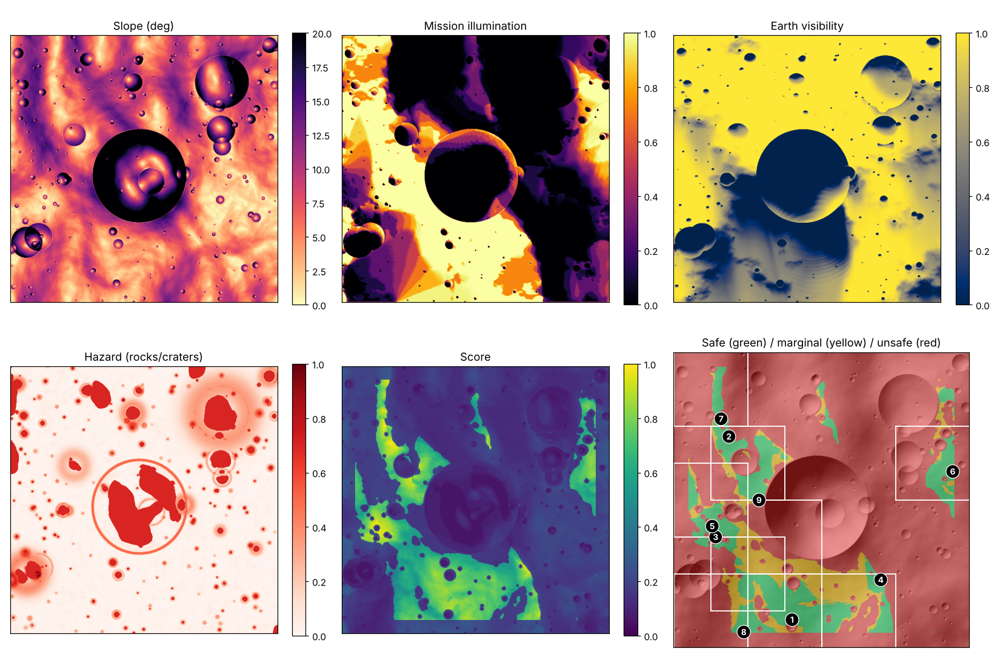
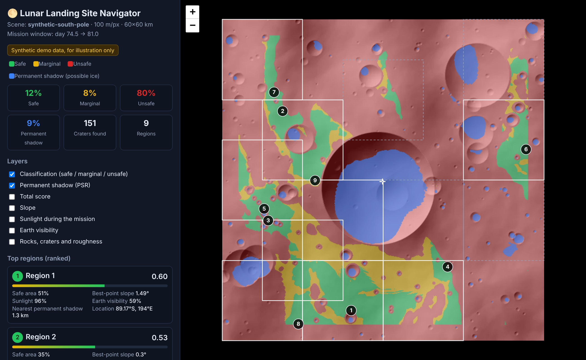
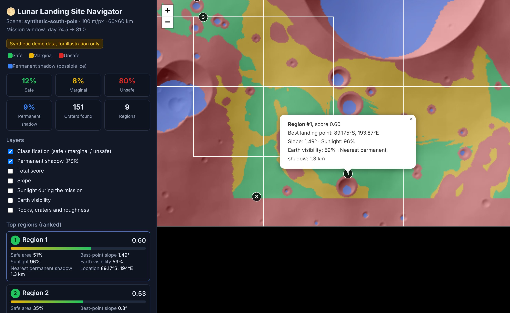
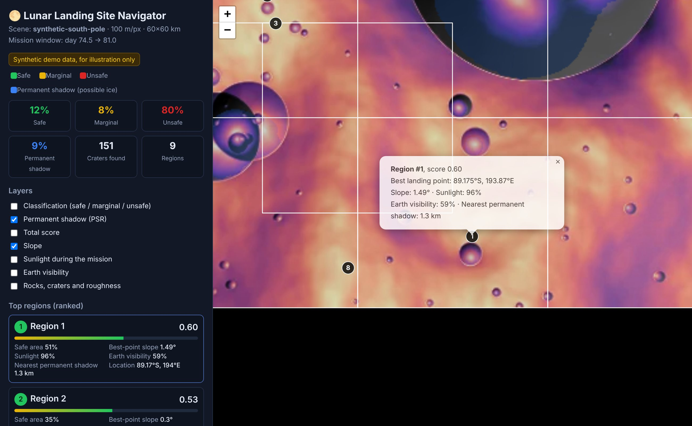
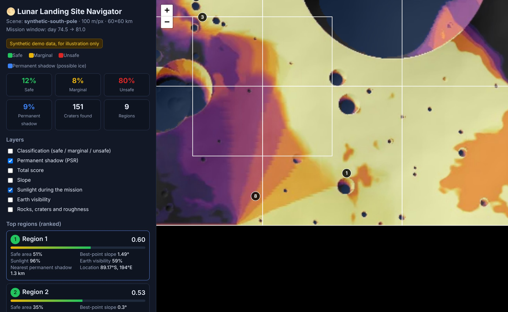
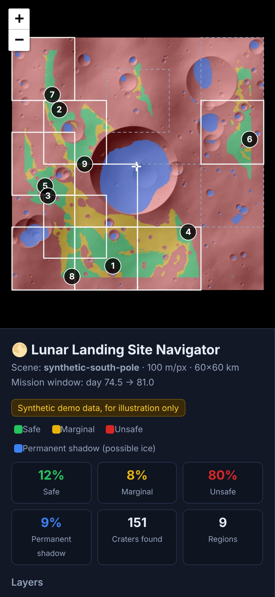

🌕 Lunar Landing Site Navigator
The complete guide, from A to Z

Contents
- The project idea
- How NASA chooses where to land
- What makes a site safe
- The system at a glance
- Project contents (files)
- Installing on your computer
- First run (demo data)
- Reading the map and the results
- Running on GitHub's servers
- Analysis on real NASA data: results and validation
- How the system works inside
- Changing the constraints and weights
- Crater and boulder detection with YOLO
- Tests
- Limits and ideas for improvement
- Troubleshooting
- Sources
1. The project idea
Before any spacecraft lands on the Moon we need to know where it is safe. The south pole is especially hard: the Sun is always close to the horizon, so shadows are very long, and there are deep craters the Sun never reaches. Those same craters are where water ice may be, so it is the most important place scientifically and the hardest place to land.
The project takes the south-pole elevation map and computes, for every point:
- how steep it is
- what share of the mission it spends in sunlight
- what share of the time Earth is visible, for communication
- how far it is from the nearest permanently dark crater
- how many craters and rocks it has
It then gives every point a score with set weights, splits the area into 15×15 km squares, ranks the best 9 regions, and shows them on an interactive map.
2. How NASA chooses where to land
NASA has a spacecraft called LRO (Lunar Reconnaissance Orbiter) that has orbited the Moon since 2009 and collects data with three main instruments:
| Instrument | What it measures | Its counterpart in our project |
|---|---|---|
| LOLA laser | fires laser pulses at the surface and measures height very precisely; elevation, slope and illumination maps come from it | terrain.py + illumination.py |
| Diviner heat | measures surface temperature. Rocks cool more slowly than soil at night, which reveals rocky areas | the --rocks option in hazards.py |
| LROC cameras | the NAC camera, about 0.5 m per pixel, sees small craters and individual boulders | YOLO in hazards.py |
With this data NASA named 13 candidate regions near the south pole for Artemis III, then narrowed them to 9 regions, each about 15×15 km. Our project follows the same steps: it picks 13 candidates, then keeps the best 9.
3. What makes a site safe
| Condition | Value | Why it matters |
|---|---|---|
| Slope | under 8° to 10° | on steeper ground the lander may tip over or not sit firmly |
| Sunlight | Sun for most of the mission (about 6.5 days) | power from the solar panels, and heat for the instruments |
| Contact with Earth | Earth above the horizon | direct communication needs a clear line of sight to Earth |
| Near permanent shadow | a few kilometres | so astronauts or robots can reach the ice |
| Rocks and craters | as few as possible | one rock under a lander leg can ruin the landing |
4. The system at a glance
5. Project contents (files)
lunar-landing-navigator/
├── lunar_nav/ ← the core code
│ ├── config.py ← constraints, weights and physical constants
│ ├── data.py ← demo data + reading NASA files
│ ├── terrain.py ← slope, roughness and map hillshade
│ ├── illumination.py ← horizon, Sun, Earth, permanent shadow
│ ├── hazards.py ← crater detection + YOLO + hazard map
│ ├── scoring.py ← scores and classes (green/yellow/red)
│ ├── regions.py ← region tiling, ranking, coordinate conversion
│ ├── pipeline.py ← connects all the stages
│ ├── nasa.py · nasa_pipeline.py · ephemeris.py · sunmodel.py ← NASA mode
│ ├── viz.py ← interactive map (Arabic + English) and summary image
│ ├── report.py ← REPORT.md / REPORT_EN.md
│ ├── cli.py ← run commands
│ └── vendor/ ← Leaflet map library (so it works offline)
├── scripts/download_nasa_data.py ← download NASA data
├── tests/ ← tests
├── results/nasa_2027/ ← saved results on real NASA data
├── docs/guide/ · docs/report/ ← this guide and the technical report
├── requirements.txt
└── README.md
.github/workflows/lunar-navigator.yml ← running on GitHub's servers6. Installing on your computer
Requirements
- Python 3.10 or newer. Download it from python.org; on Windows tick "Add Python to PATH" during installation.
- Git, to download the project from GitHub. This is optional; you can download a ZIP instead.
Steps
- Get the project:
The repository is public, so no login is needed. You can also click Code → Download ZIP on the repository page.git clone https://github.com/ELD11q/-ahs.git cd -ahs/lunar-landing-navigator - Create a Python environment for the project (recommended):
# Windows python -m venv .venv .venv\Scripts\activate # macOS / Linux python3 -m venv .venv source .venv/bin/activate - Install the libraries:
The libraries are:pip install -r requirements.txtnumpyandscipy: calculationsmatplotlibandpillow: imagesrasterio: reading NASA GeoTIFF filesnumba: makes the horizon calculation over 100 times fasterastropy: real Sun and Earth positionspytest: tests
- Check that everything works:
python -m pytest -q # should print: 15 passed
7. First run (demo data)
python -m lunar_nav --demo--nasa, explained in chapter 10.This generates a 60×60 km synthetic polar area. It has a large deep crater next to the pole (like Shackleton crater) whose floor is always dark, a chain of lit ridges, about 220 small craters, and boulder fields. The analysis takes about 30 seconds and prints something like this:
[1/5] slope: 69.0% of area <= 10.0 deg
[2/5] illumination: mission mean 0.38, PSR 9.1% of area, Earth visible 0.67
[3/5] hazards: 151 craters detected
[4/5] classes: green 12.1% yellow 7.7% red 80.2%
[5/5] regions: 13 candidates -> top 9
Top regions:
# score safe slope illum earth PSR km lat/lon
1 0.60 51% 1.5° 96% 59% 1.30 -89.175, 193.9E
2 0.53 35% 0.3° 100% 100% 2.22 -89.248, 304.5E
...Outputs (the output/ folder)
| File | What is in it |
|---|---|
landing_sites_map_en.html · landing_sites_map.html | the interactive map in English and Arabic; open in any browser, works offline |
summary.png | an image with all the layers side by side |
ranked_regions.csv | the region ranking; opens in Excel |
ranked_regions.json | the same ranking as JSON, for programs |
layers.npz | every layer as numpy arrays, if you want to analyse them yourself |

8. Reading the map and the results

- White squares: the best 9 regions, each 15×15 km.
- Grey dotted squares: candidate regions that were dropped (10 to 13).
- Numbered circles: the best landing point inside each region.
- ✛ mark: the south pole.
- Click any region in the list and the map zooms to it and shows its details.



What the table columns mean
| Column | Meaning |
|---|---|
| score | the region score from 0 to 1, from the safe area, the marginal area, and the mean of the top 5% of scores inside it |
| safe | green share of the region |
| slope / illum / earth | slope, sunlight share and Earth-visibility share at the best landing point |
| PSR km | distance from the landing point to the nearest permanent shadow |
| lat / lon | latitude and longitude on the Moon |

9. Running on GitHub's servers (GitHub Actions)
The project has a file .github/workflows/lunar-navigator.yml. It makes GitHub run the whole system on its servers, without your computer.
When does it run automatically?
- Every time you push a change to the project files.
- Every time you open a pull request.
What does each run do?
- Prepares an Ubuntu server with Python 3.12 and installs the libraries.
- Runs the 15 tests; if one fails it stops and tells you.
- Downloads the official NASA data (about 1.2 GB) from NASA Goddard's servers. Only the first time; after that it is kept in the cache.
- Runs the full analysis on NASA data, with the 2027 windows and the accuracy checks. This takes about 3 to 5 minutes.
- Writes the table of best regions and the validation results on the run page itself.
- Uploads the interactive maps, images, reports and tables as a downloadable artifact, kept for 30 days.
How to run it by hand and see the result
- Open the repository on GitHub and click the Actions tab.
- From the list on the left choose Lunar Landing Navigator.
- Click Run workflow. Change the settings or leave them as they are, then click the green Run workflow button.
- Wait a few minutes until a ✅ appears.
- Open the run. The results table is on the page, and under it the Artifacts section has a file called landing-sites-nasa. Download it, unzip it, and open
landing_sites_map_en.html.
Settings you can change on a manual run
| Setting | What it does |
|---|---|
mode | nasa (default): official NASA data · demo: demo data · custom: an elevation file of your choice |
year | mission year for the launch windows (default 2027) |
max_slope | maximum allowed slope in degrees |
dem_url, pixel_size, downsample, dem_scale | custom mode only: file link, pixel size, downsampling factor, and scale factor to metres |
10. Analysis on real NASA data: results and validation
This is the project's main mode. One command downloads the official NASA data and analyses it in full:
python -m lunar_nav --nasa -o output
# options: --year 2027 --half-width-km 240 --res 80 --max-slope 10The first run downloads about 1.2 GB into data/nasa, and the analysis takes about 2.5 minutes on an ordinary 4-core computer.
a) The official data used
| Layer | File | Source |
|---|---|---|
| Elevation | LDEM_80S_80MPP_ADJ.TIF (80 m/px) | Barker et al. 2023: the latest LOLA south-pole map (PGDA 90) |
| Slope | LDSM_80S_80MPP_ADJ.TIF | Barker et al. 2023 |
| Roughness (in place of rocks) | LDRM_80S_50MPP_ADJ_ROUGH_100M.TIF | Barker et al. 2023 |
| 18.6-year average illumination | AVGVISIB_75S_120M_201608.TIF | Mazarico et al. 2011 (PGDA 69) |
| Average Earth visibility | AVGVISIB_75S_120M_201608_EARTH.TIF | Mazarico et al. 2011 |
| Permanent shadow (PSR) | LPSR_75S_120M_201608.TIF | Mazarico et al. 2011 |
All files share the same polar projection, so the system puts them on one 480×480 km grid at 80 m (36 million pixels). We checked the coordinates: Shackleton crater's IAU coordinates land at −2788 m depth inside a permanent shadow.
b) Analysis steps
- Artemis Exploration Zone: the search is limited to a 6° circle around the pole (down to about 84°S), NASA's requirement for Artemis III.
- Scores and classes: the same five criteria, with values calibrated on the real data. The 18.6-year average illumination is only about 0.35 to 0.5 even at the best sites, because it includes the polar winter.
- Regions: we pick 13 candidate regions of 15×15 km that do not overlap and are at least 20 km apart. A region gets full marks for safe area once it is sufficient (15% of its area); the rest depends on the quality of its best sites.
- Real 2027 launch windows: for each candidate we compute the horizon of its best point in 128 directions out to 150 km, and move the Sun and Earth hour by hour through the year at their real positions. We then count the 6.5-day windows with continuous light.
- Final pick, 13 to 9: 60% terrain and criteria score, 40% launch-window availability. This is the same logic as NASA's report (NTRS 20250011660): regions with more launch opportunities through the year move ahead.
c) Results: the best 9 regions
| # | Location | 2027 windows | Best window (UTC) | Earth visibility | Nearest permanent shadow | Near a NASA region |
|---|---|---|---|---|---|---|
| 1 | 85.08°S, 37.2°E | 36% | 2027-01-09 | 81% | 2.3 km | Mons Mouton, Nobile Rim 1 and 2 |
| 2 | 85.01°S, 143.0°E | 28% | 2027-03-10 | 33% | 1.6 km | — |
| 3 | 84.11°S, 32.7°E | 26% | 2027-01-13 | 83% | 1.2 km | Mons Mouton |
| 4 | 85.34°S, 127.6°E | 25% | 2027-03-09 | 33% | 1.7 km | — |
| 5 | 84.58°S, 27.0°E | 24% | 2027-01-13 | 87% | 2.2 km | Mons Mouton |
| 6 | 84.38°S, 39.2°E | 24% | 2027-01-12 | 80% | 0.6 km | Mons Mouton, Nobile |
| 7 | 84.23°S, 109.1°E | 24% | 2027-02-10 | 34% | 2.2 km | — |
| 8 | 84.76°S, 134.5°E | 23% | 2027-03-09 | 33% | 0.6 km | — |
| 9 | 86.01°S, 290.1°E | 23% | 2027-06-22 | 56% | 0.6 km | — |
"2027 windows" is the share of moments in the year that, if the mission started then, would give 6.5 days of continuous light. In every region the best point has a slope under 1°. NASA itself says "each region alone offers limited opportunities", which is why it keeps several regions, and our results (23% to 36%) confirm this.


d) Accuracy checks
1. Illumination model vs NASA's maps: we computed the 18.6-year average ourselves for 111,556 points × 13,588 moments and compared it point by point with NASA's official maps:
| Correlation r | Mean error | Share of points with error under 10 points | |
|---|---|---|---|
| ☀️ Sun | 0.91 | 3.7 percentage points | 91% |
| 🌍 Earth | 0.94 | 5.8 percentage points | 84% |

2. Comparison with an independent scientific study (Peña-Asensio et al. 2024, arXiv:2406.19863). This study ranked 1247 points in NASA's 13 regions with TOPSIS and different data from ours. Result: 70% of their top 20 points fall in the top 10% of our map, and their best point (Nobile Rim 2, 84.20°S, 60.70°E) is "safe" on our map and higher than 94% of the area.
3. Comparison with NASA's nine regions (October 2024): our nine regions cover 4 of 9 NASA regions (Mons Mouton, Mons Mouton Plateau, Nobile Rim 1 and Nobile Rim 2), and our 13 candidates cover 5 of 9 because they add Malapert Massif. Around 8 of NASA's 9 regions we have points in the top 1% of the map. The exception is Cabeus B, because its landmark lies outside the search area.
- NASA does not publish region boundaries, so we place each region at the landmark it is named after.
- The Cabeus B landmark itself lies outside the 84° circle we work in, even though the region NASA named after it is closer to the pole.
- NASA also uses constraints that are not in our model: the NRHO orbit, launch trajectories, the SpaceX HLS lander design, and 0.5 m LROC images of boulders.
All these numbers are saved automatically in REPORT_EN.md, REPORT.md and validation.json in the output folder, and a copy is in the project under results/nasa_2027/.
e) An elevation file of your choice (custom mode)
python scripts/download_nasa_data.py --list # links to the official sources
python scripts/download_nasa_data.py <link> -o data/
python -m lunar_nav --dem data/<file>.tif --pixel-size 20 --downsample 4 \
[--rocks data/rocks.tif] [--illum data/avg_illum.tif]--pole ROW COL. For .IMG files, read the matching .LBL file and set --dem-scale.11. How the system works inside
Step 1: slope (terrain.py)
For every pixel we take the height difference with its neighbours in both directions and turn it into an angle:
slope = arctan( √( (∂z/∂x)² + (∂z/∂y)² ) )We also compute roughness: remove the general trend of the ground and measure the standard deviation of the small-scale terrain. A rough area is risky even if its overall slope is small.
Step 2: the horizon (illumination.py)
This is the most important step. At the south pole the Sun never rises more than about 1.5° above the horizon, so any small hill can block it. For every pixel we cast rays in 32 directions out to 40 km and record the highest horizon angle in each direction. We include the curvature of the Moon, because a distant mountain drops below the horizon by:
drop = d² / (2R) R = 1737.4 km (lunar radius)Step 3: motion of the Sun and Earth
- The Sun circles the polar sky once every 29.5 days, and its elevation swings between −1.54° and +1.54° over 346.6 days: these are the Moon's "seasons".
- Earth stays roughly toward the near side, but it wobbles (libration) ±6.7° above and below the horizon about every 27.2 days.
- The further a point is from the pole, the more a body's angle in its sky changes, by
colatitude × cos(Δazimuth).
We then move the Sun and Earth every 3 hours through the mission, compare their elevation with the computed horizon, and get the share of time each is visible.
To choose the mission time, the system looks for the best 6.5 days in the year: southern polar summer, with Earth above the horizon most of the time. This is what NASA does when it picks a launch window.
--nasa) we use a more precise version of this step:
- Real Sun and Earth positions for any date, from astropy (the built-in ERFA ephemeris, works offline).
- The Moon's orientation in space from the International Astronomical Union model (IAU 2009, Archinal et al. 2011). We checked the results: Earth libration ±6.8° and ±7.7°, Sun elevation ±1.55°, distance 357 to 407 thousand km.
- The horizon is computed by ray-tracing on the LOLA map itself (up to 150 km, in 64 to 128 directions) with lunar curvature. The parallax of Earth from the observer's position is included.
- The code is written with numba, so millions of points over thousands of moments take only seconds.
Step 4: permanent shadow (PSR)
We compute illumination over 6 lunar years, and any pixel with average illumination under 0.5% counts as permanent shadow. These places are about −230 °C, and that is where water ice may be. We then compute, for every pixel, the distance to the nearest permanent shadow.
Step 5: craters and rocks (hazards.py)
No AI needed: we subtract a smoothed copy of the map at 3 different scales, and places clearly lower than their surroundings are craters. We combine craters with roughness, and with the Diviner rock map if there is one, into a hazard index from 0 to 1.
Step 6: scores and classes (scoring.py)
Every criterion becomes a number from 0 (bad) to 1 (excellent):
| Criterion | Conversion | Default weight |
|---|---|---|
| Slope | 1 − slope ÷ 10° | 30% |
| Sunlight | share of the mission in sunlight | 25% |
| Earth visibility | share of time Earth is visible | 15% |
| Near permanent shadow | 1 under 2 km, falling gradually to 0 at 15 km | 15% |
| Rocks and craters | 1 − hazard index | 15% |
Total score = sum of (weight × criterion score)
Then the classes:
- Red: slope above 10°, permanent shadow, mission sunlight under 30%, or rock hazard above 0.6. It is grown by 300 m (the landing ellipse), and the map edges (3 km) are excluded because the horizon beyond them is unknown.
- Yellow: slope between 8° and 10°, Earth visibility under 30%, or total score under 0.55.
- Green: everything else.
Step 7: regions (regions.py)
We slide a 15×15 km window across the map in 7.5 km steps and score each window. We take the best 13 windows, provided they do not overlap more than 25% and do not repeat the same landing point, and keep the best 9. The best point's position is converted to latitude and longitude with the inverse polar projection.
12. Changing the constraints and weights
From the command line
# maximum slope of 8 degrees instead of 10
python -m lunar_nav --demo --max-slope 8
# give sunlight more importance
python -m lunar_nav --demo --weights '{"illumination":0.4,"slope":0.3}'
# set the mission start day yourself
python -m lunar_nav --demo --mission-start 120
# different demo data
python -m lunar_nav --demo --seed 42 --size 800From the code (config.py)
All the numbers are in one place. For example landing_ellipse_radius_m for the landing-ellipse size, region_size_m for the region size, n_final_regions for the number of final regions, and psr_ideal_distance_m for the ideal distance to permanent shadow.
13. Crater and boulder detection with YOLO
The elevation map has a resolution of tens of metres, so it cannot see small boulders. That is why the system has a ready function, detect_hazards_yolo, that runs a YOLO model on LROC camera images.
- Install the library:
pip install ultralytics - Prepare training data: NAC images with boxes around craters and boulders. You can start from the Robbins crater database, or label images yourself with a tool such as Roboflow or CVAT.
- Train the model:
yolo detect train data=craters.yaml model=yolov8n.pt imgsz=640 epochs=100 - Run the system with the model:
python -m lunar_nav --dem data/dem.tif --pixel-size 20 \ --yolo-weights runs/detect/train/weights/best.pt \ --yolo-image data/nac_mosaic.tif
14. Tests
python -m pytest -q| Test | What it checks |
|---|---|
| test_slope_of_known_plane | a surface tilted exactly 12° is measured as 12° |
| test_flat_terrain_… | flat ground has no horizon and is lit in polar summer |
| test_deep_pit_floor_… | the floor of a deep pit is permanent shadow, and its surroundings are lit |
| test_latlon_of_pole_… | coordinate conversion is correct, and the pole comes out at −90° |
| test_mission_window_… | the chosen mission window has the Sun and Earth above the horizon |
| test_pipeline_end_to_end | the whole system runs, the ranking is correct, and no landing point is red |
| test_steep_areas_are_red | every area with slope above 10° or with permanent shadow is red |
| test_html_export | the map is saved and works offline |
| test_english_map_has_no_arabic | the English map contains no Arabic text |
| test_ephemeris_matches_known_… | Sun and Earth positions match known values: tilt 1.54°, libration 6.7° and 7.9°, closest and furthest Earth distance |
| test_numba_horizon_agrees_… | the fast horizon calculation matches the reference calculation |
| test_flat_ground_at_pole_… | flat ground at the pole sees the Sun and Earth about half the time |
| test_nearside_slope_… | the side facing Earth sees Earth more than the far side |
| test_stereographic_roundtrip | coordinate conversion to and from the map is accurate to 6 decimal places |
| test_reference_data_is_complete | the comparison data is complete: NASA's nine regions and the study's top 20 points |
15. Limits and ideas for improvement
Current limits
- This is an education and research system, not a certified flight tool.
- The illumination model is checked against NASA (correlation 0.91 for the Sun and 0.94 for Earth), but it is not 100% identical. The differences come from horizon resolution (240 m in the check) and how the Sun and Earth discs are modelled.
- Small boulders (under 100 m) do not show in LOLA data. They need 0.5 m LROC NAC images and a trained YOLO model.
- The NRHO orbit, launch trajectories and the HLS lander constraints that NASA uses are not included.
- Demo mode (
--demo) is randomly generated and is for learning and display only. - The edges of any map are not scored, because the mountains beyond them are unknown. So load an area a little larger than you need.
Ideas for improvement
- Mission-window analysis for every pixel in the map, not only for the best point of each region.
- Use 5 to 20 m LOLA maps for the final regions (PGDA 78 and 90).
- Actually train YOLO on NAC images.
- Compute the longest continuous dark period for every point, because the batteries must survive it.
- Plan a rover path from the landing point to the permanent shadow.
16. Troubleshooting
| Problem | Fix |
|---|---|
python: command not found | use python3; on Windows reinstall Python and tick "Add to PATH" |
ModuleNotFoundError | make sure the environment (.venv) is active, and run pip install -r requirements.txt |
Pixel size unknown | add --pixel-size 20 with the file's correct value, or install rasterio |
| slow run, or not enough memory | increase --downsample, or lower --azimuths to 16 |
| strange heights (far too large or small) | check the .LBL file and correct --dem-scale |
| a GitHub Actions run failed ❌ | open the run, click the red step and read the log. If the error is in the download, check that the dem_url link is correct and opens directly |
| the whole map is red | usually the mission time falls in polar winter, or dem-scale is wrong. Try another --mission-start value |
17. Sources
Sources that came with the project idea
- NASA Scientific Visualization Studio: illumination at the lunar south pole
https://svs.gsfc.nasa.gov/vis/a000000/a003500/a003587/script_9206_00.html - NASA Technical Reports Server: 20250011660
https://ntrs.nasa.gov/citations/20250011660 - Aerospace America (AIAA): "The Choice", on selecting the Artemis III landing regions
https://aerospaceamerica.aiaa.org/features/the-choice/ - arXiv 2406.19863
https://arxiv.org/pdf/2406.19863
Scientific references for the method
- Mazarico, E., Neumann, G.A., Smith, D.E., Zuber, M.T., Torrence, M.H. (2011). Illumination conditions of the lunar polar regions using LOLA topography. Icarus 211, 1066–1081. The basis of our horizon and illumination calculation.
- Smith, D.E. et al. (2010). The Lunar Orbiter Laser Altimeter Investigation on the Lunar Reconnaissance Orbiter Mission. Space Science Reviews 150.
- Bandfield, J.L. et al. (2011). Lunar surface rock abundance and regolith fines temperatures derived from LRO Diviner Radiometer data. JGR Planets 116. On Diviner rock maps.
- Robinson, M.S. et al. (2010). Lunar Reconnaissance Orbiter Camera (LROC) Instrument Overview. Space Science Reviews 150.
- Robbins, S.J. (2019). A New Global Database of Lunar Impact Craters >1–2 km. JGR Planets 124. doi:10.1029/2018JE005592
- NASA (2024). NASA Provides Update on Artemis III Moon Landing Regions. nasa.gov
Official data and additional methods
- Barker, M.K. et al. (2023). A New View of the Lunar South Pole from LOLA. NASA PGDA product 90. pgda.gsfc.nasa.gov/products/90. Source of the elevation, slope and roughness maps.
- Mazarico, E. — Lunar Polar Illumination. NASA PGDA product 69. pgda.gsfc.nasa.gov/products/69. Source of the average illumination, Earth visibility and permanent shadow.
- NASA (2025). Artemis III Site Selection Update: Downselection From Thirteen to Nine Candidate Regions. NTRS 20250011660. Names of the nine regions and the selection logic.
- Archinal, B.A. et al. (2011). Report of the IAU Working Group on Cartographic Coordinates and Rotational Elements: 2009. Celestial Mechanics and Dynamical Astronomy 109, 101–135. Lunar orientation model.
- IAU / USGS. Gazetteer of Planetary Nomenclature. planetarynames.wr.usgs.gov. Landmark coordinates and diameters.
- Astropy Collaboration (2022). The Astropy Project. ApJ 935, 167, and the ERFA library for body positions.
Data sources
- PDS Geosciences Node: LOLA GDR Polar: pds-geosciences.wustl.edu
- NASA GSFC Planetary Geodesy Data Archive (PGDA): pgda.gsfc.nasa.gov
- LROC Data Products: wms.lroc.asu.edu
Tools used
Python, NumPy, SciPy, Matplotlib, Pillow, Leaflet (maps, BSD-2 licence), Ultralytics YOLO (optional) and GitHub Actions. The font is Cairo (OFL licence).